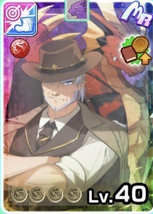

グレイスウィッチ
 ハロウィン限定
ハロウィン限定
グレイスウィッチ
白オーラ
魔族
ハロウィン限定
主血統ピクシー
副血統ノーブル
評価解説
- 2025年10月のハロウィンステップアップガチャにて実装された記念すべき最初のノーブルモンスター。
- 5ステップのモンスターガチャを最大5天井迄で1%のピックアップ率を掴み取るのはそう簡単ではなく、多くのブリーダー達の貯め石を吐き出させた高貴なるモンスター。秘伝の重要性を理解しているアーリーアダプター達もこぞって血眼で天井交換し、大量の虹ハートやプシュケーをぶっ込ませたであろう罪な女。
- 今作のメインコンテンツである秘伝周回の概念を大きく変えたモンスター。
- ベースが同血統黄オーラのウィッチなので、ウィッチの固有技をそのまま持っている。ウィッチと同じく遠距離ランク4白技「ギガレイ」を登録可能とするも、紹介動画で意気揚々と「ギガライトニング」を放っていたせいで登録技だと勘違いされ、ミリムを引けていなかったブリーダー達の期待からの絶望と落胆の声が溢れる事態となった。
- 特に凹みのない距離適性だが、砂漠と森林適正がBであるが故、森林や砂漠型の神秘伝が多く散見される。
- バトル面で評価されることは少ないが、ノーブル固有の状態変化「高潔」を持つ以上その戦闘ポテンシャルも高い。ピクシー種の登録技を揃えている場合のグレイスウィッチの主力技が黄、黒、赤、白オーラとバラけているので「フォース～レンジ」系のガッツ補助は単体色でカバーし切れないが、そんな時に「高潔」のガッツ回復が光る。
- 「魔族の律」持ちでもあり、同血統色被りのエンジェルやカチョウフウゲツよりも個体としての強さはかなり上。
- MRナデシコやMRメガラニカ、MRステラがあれば周回も育成も幾分ラクになりやすい。ノーブル育成では総合力の高さも意識しよう。
- 秘伝周回tipsとして、M-1グランプリ等での総当たり勝敗ガチャに負けない為にも試合までに出来るだけ超修行などでランク4以上の技を複数獲得して、技設定でちゃんと有効な技構成に絞った上で試合を迎えよう。何の対策も無くやるより優勝しやすくなるはず。MRステラを編成に入れれば序盤から高ランク技は取りやすい。
おすすめ編成
おすすめ編成①

メガラニカ

ナデシコ

ニシキ

マリッジ

白凰
レンタル

ステラ